生成时间：2026-11-08T11:47:24+08:00
今日保留论文数：7
内容构成：今日新文 7 篇；补充推荐 1 篇；经典旧文精读 0 篇
阅读分层：重点精读 2 篇；相关简报 6 篇。精读依据科学贡献筛选，简报保留方法、结论及局限。
补充推荐论文数：1
数据源警告
- 本次有 1 个数据源访问异常；完整错误已保留在运行日志中，日报只显示摘要。
- 其他来源：1 个异常。
- 主要错误类型：其他 1 次。
高能天体物理重点
1. The kinematic Kelvin-Helmholtz instability-driven dynamo: implications for merging compact objects
- 来源：arXiv / astro-ph.HE
- 链接：https://arxiv.org/abs/2611.05880
- 作者：James R. Beattie, Amitava Bhattacharjee, Elias R. Most, Bart Ripperda, Alexander Philippov, Ralf S. Klessen, Salvatore Cielo
- 公告 / 来源日期：2026-11-05
- 阅读层级：重点精读
- 评分：novelty 8/10，importance 8/10，relevance 8/10，final 9.00/10
- 推荐理由：正文/补充核验：高Re能量增长率平台与洛伦兹功峰共同支持剪切尺度控制；垂直起动负1/3幂固定指数在Re256–4096测试；外推BNS亚毫秒有明示假设，保留精读。
中文题目：双中子星刚接触时怎样放大磁场：剪切缠绕、三维破碎和发电机起动
做了什么：两颗中子星接触后，交界两侧物质以不同速度滑动，容易形成开尔文–亥姆霍兹不稳定性（KHI）的卷涡。磁场会被剪切拉长，但在弱磁场阶段，局地流动究竟多快能把磁能提升到足以反过来改变流体的程度，并不能从并合模拟的最终磁场反推。作者用显式黏性和电阻的三维可压缩磁流体模拟隔离这个问题：保持剪切层的几何可控，分别改变流动雷诺数、马赫数和一小组磁普朗特数，在磁场影响流动尚弱时量磁能增长、垂直平均场和谱中的能量交换尺度。
结果区分出三段：初始平均剪切缠绕磁场，卷涡中的次级不稳定性打破平面流动，随后平均垂直场和小尺度磁场进入近指数放大。高雷诺数端，总磁能增长率不再随雷诺数平方根增加，而由剪切层厚度和速度差给出近似固定尺度；垂直场起动的延迟则继续缩短。将这一局地标度外推到论文采用的中子星剪切层，作者估计运动学阶段在亚毫秒结束、总场可达磁星强度。这里没有重新模拟一次完整并合，更没有算出喷流光变或预测某个引力波事件的磁场。
为什么重要：通常的小尺度发电机模型把最快的磁场拉伸归给黏性截断附近的涡。若套用这个图像，分辨率提升后增长率可一直随黏性尺度变小而加快。本文同时看磁能谱和逐尺度洛伦兹功，发现高雷诺数时虽能形成近似熟悉的磁谱斜率，供给磁场的主尺度却转向初始剪切层厚度。这个区分解释了为什么全局并合计算看见了磁场增长，却可能以错误的速度重现最早阶段，也给怎样判断数值收敛一个比“最终磁场很强”更可核查的条件。
理论 / 观测 / 仪器方法价值：最可复用的是拆分诊断：先用已知初始速度梯度预测平面剪切的短时磁场，再用平面平均的垂直分量检查何时出现不能由原剪切产生的增长，最后用洛伦兹功的波数分布定位能量从流体流向磁场的尺度。三条证据各检查不同问题。若要为全局相对论计算构造次网格模型，应从实际局地剪切厚度、速度差和输运系数确定所属区间，用有分辨率的局地计算校准起动与增长率，不能只写一条在所有阶段通用的指数律。
为什么应该关注：并合后是否能驱动相对论喷流，既取决于磁能，也取决于磁通能否建立大尺度方向和持续供能。本文把初始剪切提供的垂直场种子与后续大尺度组织分开，因此能为高能对应体模拟提供更合理的初始条件，却不能把强场自动等同于伽马暴。最有价值的后续检验，是在显式黏阻、相对论和中微子输运的局地高分辨计算中重复这些阶段诊断，同时看跨尺度磁通是否真能从接触面输运到喷流区。
展开详细解读：文章讲解、背景、理论、重点章节、图表与相关工作
文章详细讲解
科学问题。 只看全局并合后若干毫秒的磁场峰值，无法判断场是在最初的平面剪切中被机械缠绕，还是在三维运动建立后由发电机持续放大。两者在短时间内都能增加磁能，前者却不能从给定的流向剪切生成持续增大的垂直平均分量。作者关注的是磁场还不足以改变速度场的运动学阶段，其增长和时间标度能否从早期流动结构本身推出。
作者怎么做。 计算用周期盒中的两层反向剪切代替星体接触面，层半宽为盒长的0.025倍，内外密度比8/3，初压均匀。流动从平面扰动起步，弱种子是有三维结构且无散度的随机场。黏性控制最小流体结构，电阻控制磁场梯度的耗散；显式给定这两项并用高阶网格重构，是为了将物理截止同网格扩散区别开。比较多组雷诺数和马赫数，再用局部加密分辨率与谱诊断检查关键结论。
关键结果。 初始阶段的磁能增大可由平均剪切解析预测，得到近于平坦的磁能谱片段；这不是湍流发电机已起动的证据。卷涡把轻重流体缠成弯曲界面，涡旋中的有效离心加速度触发类似瑞利–泰勒的手指结构，激发垂直速度。垂直平均磁场在此后增长。随雷诺数上升，这个延迟缩短；总场近指数增长的斜率反而趋于平台，且谱中的主能量交换尺度不再追逐黏性尺度。图1给出完整的时间序列，图4、5分别检查起动与增长，而不是用一个拟合参数解释全部阶段。
局限和下一步。 箱体自由衰减、非相对论、具有规定密度差和种子；并合的引力、压缩、曲率与流体补给并不在这一计算内。最高直接扫描的雷诺数仍低于真实中子星估算，磁普朗特数大部分为1，仅少数在固定雷诺数下改变。作者给出的亚毫秒、厘米尺度和强度是代入典型参数的外推。饱和、磁通组织和喷流不是本研究已闭合的链条，需要并合计算接续验证。
关键结果是怎么做出来的
第一步是从同一弱种子出发跟踪体积分磁能。图1中的快速增加、平台和第二次增长可在时间上分开。要比不同模拟，应先按剪切跨层时间归一，再检查同一阶段的增长，而不能把早期缠绕的快速变化与后期发电机的一条指数曲线混拟。
第二步直接用初始剪切和场的空间相关性求缠绕系数。用相同短时间窗拟合解析曲线与模拟的磁能对数，图2两者一致。流动和磁结构都还主要在原平面内时，磁能增加只表明流向场被拉长；平坦的谱带则来自拉长时模式被送往更大的横向波数。
第三步检查何时打破二维性。图3在卷涡横截面显示轻重流体界面的指状结构和沿磁场伸展。作者将其解释为卷涡有效离心力下的瑞利–泰勒型失稳，补充材料还用较黏且更强种子的算例令指状结构更易辨认。两例展示形态与几何，不能当作随机重复抽样的显著性检验。
第四步从垂直平均场平方的时间曲线找起动：沿卷涡面平均后保留跨层变化，原剪切无直接源项。用分段直线拟合对数能量的转折，图4与固定指数的雷诺数负三分之一次幂吻合。实际高时间采样覆盖的拟合主要在256至4096；并非所有更高雷诺数和真实并合都直接测出了同一延迟律。
第五步在可辨的三维近指数段比较总磁能增长率。低雷诺数端接近平方根标度，高端在无量纲约0.02附近并随马赫数散布。图5插图的逐壳层能量交换峰与剪切层尺度相符，是速率平台的另一项物理佐证。此时磁谱仍可近似经典的 $k^{3/2}$，可见相似的谱形不保证增长由同一尺度控制。
第六步才是换算天体尺度。以50米、0.3倍光速和文中中微子黏性估计，剪切时标约0.56微秒，雷诺数约45万至450万，远超参数扫描；用平台能量增长率可得每毫秒约36个指数单位。运动学阶段终点和场强仍依赖初始磁化及所用能量标定，平均垂直场也低于局地总场。文中亚毫秒结论是条件化量级，不是并合波形里已测得的精确时间。
展开背景、理论、公式、模型和章节导读
背景知识
双中子星并合时，公转与自转让两侧表面物质在接触处呈现切向速度差。一个小的界面起伏会被两侧流动放大并卷成涡，这就是开尔文–亥姆霍兹不稳定性。即使并合系统在整体尺度上接近圆形，接触层也可能极薄，因此全局网格能看见两颗星合并，却未必能看见最初的卷涡内部细结构。
导电流体会带动磁场。若一条场线横跨快慢两股流，它的两端移动距离不同，流向分量就被拉长。磁能是场强平方，故初始磁能可以快速增加；只要原速度场没有垂直分量，这一过程却不会主动增大垂直平均场。要称为持续的发电机，还需要进一步生成和拉伸新的磁结构，而不能只靠一次缠绕。
弱磁场下可先把速度场近似看作外部给定，这便是运动学发电机阶段。磁场强到洛伦兹力改变速度梯度后，增长会改变，随后可能重新组织到较长波长并饱和。观测上磁星量级是场强，模拟诊断常报磁能；二者的指数增长率相差一倍，局地极值和平均场也不能互换。
传统湍流理论常预测，随黏性降低，较小的旋涡更快拉伸场线；但并合接触面不是均匀、持续驱动的湍流箱，它有特定剪切厚度和演化时钟。本文之所以能分辨两种标度，是因模拟能在固定几何下扫描实际黏性，并同时看速度谱、磁谱及磁场从不同流动尺度获得能量的速率。
基础理论 / 方法脉络
雷诺数比较平流与黏性扩散。以剪切速度差及半宽定义后，高雷诺数表示剪切能在黏性抹平前产生更多细结构。磁雷诺数比较同样的平流与欧姆扩散；两者的比值即磁普朗特数。把两种耗散都显式写入，才能讨论物理增长率何时不再跟着网格的有效黏性移动。
开始的剪切速度主要沿一个方向，速度梯度垂直于它。感应方程此时把已有的跨层磁场转为流向场。过程在固定梯度下给场幅线性、能量主项平方时间增长。黏性逐渐展宽层、削弱梯度，电阻优先抹去被缠绕产生的小结构，因此这条标度既不是指数，也不能无穷持续。
当卷涡形成，轻重流体的弯曲界面感受到有效离心加速度。若排列不稳定，小扰动会以瑞利–泰勒型方式在第三个方向上增长。短波在理想条件下更快，黏性却在短波端更有效，竞争给一个有限最快模式。这个最快模式的时标设定何时有足够的垂直流动支持新磁结构。
三维阶段的垂直平均场量是沿卷涡面做平均，再取跨层位置上平方的平均，并不是整个周期盒存在净磁通。它可与小尺度场同时增长。测量总磁能指数与谱中洛伦兹功峰能区分主能量来源：若黏性尺度继续变小而功率峰仍在剪切厚度附近，增长就可能收敛到剪切控制，而不等于流动失去湍流。
公式与推导
一、先选物理时钟。 令剪切层半宽为 $\delta_0$，速度差为 $\Delta U$，黏性与磁扩散率分别为 $\nu$、$\eta$，两者单位均为长度平方每时间。论文按剪切定义：
这样换尺度后，先比较无量纲增长率；最后才将其乘回具体天体的秒数。
二、原剪切如何搬运磁场。 在论文附录A4的感应方程中取不可压缩、无电阻、运动学近似，沿流体的导数满足：
这里只有 $x$ 方向速度梯度；产生的新分量在 $y$ 方向，垂直场不受这一项放大。
三、把场幅转成能量。 补充材料S1–S2给出初始缠绕解及体积平均。令 $\tau=t/t_\Delta$，并沿平流轨迹理解初始场：
$a$ 是初始与新流向场的交叉项，可正可负；$b$ 是新场的平方项，非负。这个多项式解释了快速却非指数的初段。
四、非理想项何时压低缠绕。 论文以附录S9的层展宽和S3的电阻损失修正理想结果。给定初始波矢 $\mathbf p$，局部常剪切下有：
无量纲系数 $\kappa_\nu,\kappa_\eta$ 从初始层剖面求出。$w$ 变大削弱梯度，$k_x$ 随时间增大使电阻损失加快；论文式(1)将这两种影响合入缠绕能量，不以网格噪声替代黏阻。
五、单独跟踪不能由缠绕解释的量。 把感应方程沿 $yz$ 平面平均，补充材料式S20得到：
横线表示平面平均，仍依赖 $x$。原剪切只在 $y$ 方向，因此第一项在原始平面剪切下无源；测到它持续增长，说明有新的流动和场相关项。
六、三维扰动的最快尺度。 令 $K=k\delta_0$，$A=(\rho_h-\rho_l)/(\rho_h+\rho_l)$ 是轻重流体的相对密度差，$C=A g_{\rm eff}\delta_0/(\Delta U)^2$ 无量纲。论文式(3)为：
第一项是重轻界面失稳，第二项是黏性阻尼。它们随波数变化不同，所以峰值不在无穷大波数。
七、最大化并得到延迟标度。 对 $K$ 求导令零可得教学中间式，代回即论文式(4)：
只在涡几何、初始扰动和密度差可比较时，这个率才给相同的雷诺数幂次。将扰动从 $\xi_0$ 长到破坏卷涡的 $\xi_{\rm nl}$，在忽略另行卷起所需时间时，论文式(5)给：
这约束的是垂直发电机的起动延迟，与总磁能接下来的指数斜率不是同一个量。
八、转换为可比较的天体速率。 论文测到高雷诺数的无量纲磁能速率接近0.02。若所用速度差和厚度对应 $t_\Delta\simeq0.56\,\mu\mathrm s$，可作教学换算：
后一等号假设统计体积不变。拟合能量速率时不能当成场幅速率，也不能直接延长到回馈已改变速度场的阶段。
模型拟合 / 应用方法
模型输入。 周期盒半宽参数、密度对比、平面初始扰动和初始磁谱在一系列模拟中受控。主要网格为1152立方，关键高雷诺数对照到2304立方；剪切雷诺数从64到16384，马赫数0.5、1、2，主要磁普朗特数1。仅在一个固定雷诺数和马赫数处另改磁普朗特数，因此不能从该扫描独立确定所有高磁普朗特数极限。
初始缠绕。 作者从实际初场和剪切剖面计算解析缠绕系数，然后在相同的1至10个剪切时标窗对模型和模拟的磁能对数等权拟合。图2误差棒来自换窗口的敏感度，不是对重复实验总体求置信区间；解析和模拟一致支持该阶段的机制，而不能外推到已经形成明显三维流动的时间。
指数段选择。 模拟进入持续垂直速度后，先定位磁能增长的暂停，再在暂停至少10个剪切时标之后找指数段。候选窗须至少20个剪切时标且一个磁能倍增指数尺度，检验对数拟合残差和子区间斜率是否一致。这一步避免把很短的噪声峰当成发电机，但仅有符合条件的模拟进入增长率图，不能据此说低雷诺数样本都已超临界。
垂直场起动。 三段直线拟合平面平均垂直场的对数平方，第一转折为起点、中间斜率为增长率。固定理论指数并按马赫数组别拟合归一，主要用256至4096的高时间分辨序列。拟合窗口变化给不确定度；几何卷起时间和种子来源依赖初态，因此不是完全自由拟合证实普适指数。
验证与失效。 用磁谱、速度谱、尺度分解的能量交换和高分辨率对照一起判断机制。最大的外推风险是把周期盒的黏性截断、剪切层厚度和场种子直接等同于真实并合；只提高空间分辨率而没有足够时间采样，也会漏过短暂的阶段。非线性磁反馈及随后磁通拓扑需要不同的收敛检查，不能沿用这里的运动学拟合。
重点章节 / 结果段落怎么读
- 第II节与End Matter：先标出速度梯度方向、磁种子和黏阻定义，理解哪个分量在纯平面剪切下不能被持续产生。
- 第III节初两阶段及图1–3：把早期缠绕拟合、卷涡指状结构和后续三维破碎串起来，注意快速增能不自动等于指数发电机。
- 图4、5和补充IV–VI：分开读垂直场的起动时间与总磁能斜率，核对取窗、粘性尺度及谱能量交换峰如何支撑两个不同标度。
- 第IV节：区分直接扫描的雷诺数、代入中子星参数的换算与喷流前景；特别看厘米尺度分辨要求是用指定黏性与几何估出的。
关键图表与解读
图1
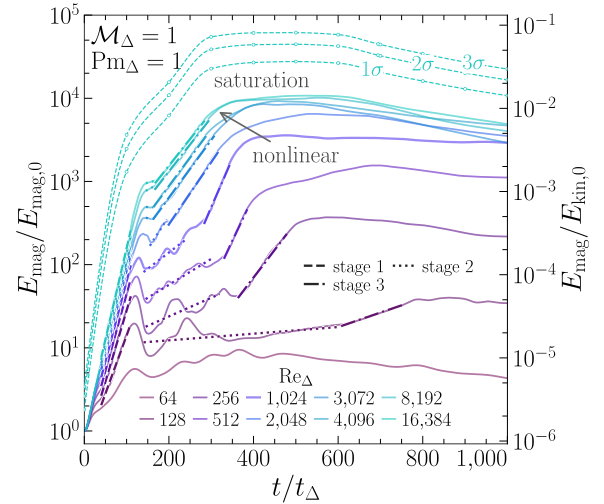
图注：剪切马赫数和磁普朗特数均为1时，体积分磁能随剪切时标演化。左轴以初始磁能归一，右轴以初始动能归一。虚线、点线、点划线依次标示缠绕、放大暂停与指数增长；后续标注非线性与饱和。青色曲线为雷诺数16384算例中能量涨落的1、2、3个标准差。
怎么看这张图：顺时间看三段何时转换。早期陡升可由剪切缠绕产生，后期斜率需在独立识别出的三维增长段量取。 给出完整时间链，避免把两个不同磁能增长阶段混为一条指数律。
来源与置信度：arXiv HTML；source verified；https://arxiv.org/html/2611.05880v1/letter_energy_athenak.svg
图3
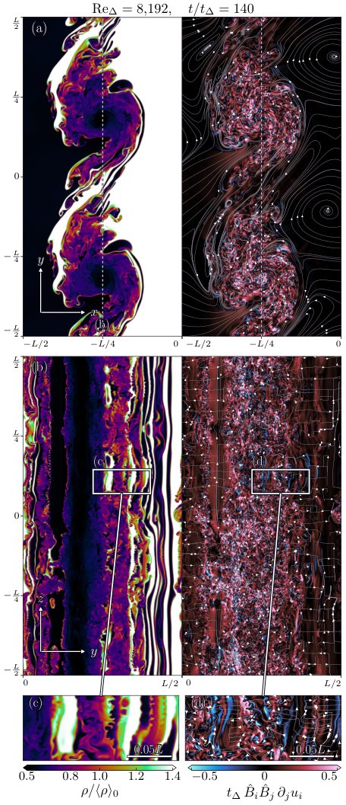
图注：雷诺数8192、磁普朗特数1、时刻为140个剪切时标的卷涡破碎。左侧为按均值归一的质量密度，右侧为以剪切时标乘沿磁场方向的速度拉伸率。(a) 原剪切平面切片，(b) 在图示位置的垂直切片；(c)、(d) 放大相同区域，显示卷涡内瑞利–泰勒型指状结构。流线追踪切片内的磁场分量。
怎么看这张图：沿横截面找出伸入涡内的密度细指，再对照同处的场向拉伸。这个形态是平面运动如何变成三维运动的例子，不单凭一幅图量增长率。 给垂直场起动标度补上实际模拟中的几何机制。
来源与置信度：arXiv HTML；source verified；https://arxiv.org/html/2611.05880v1/letter_khi_rti.png
图4
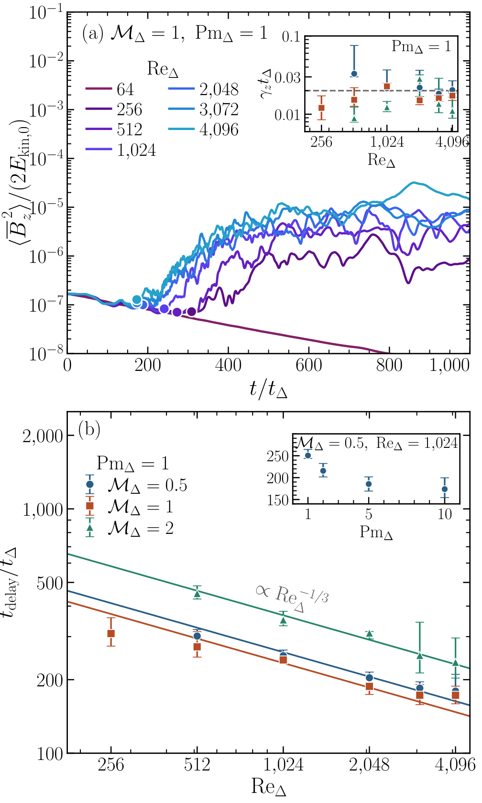
图注：大尺度垂直场的延迟增长。(a) 对垂直场做卷涡平面平均后取平方，并用初始动能归一；点标起动时刻，插图是对数增长率，参考线为每剪切时标0.02。(b) 无量纲延迟随剪切雷诺数变化；曲线为固定负三分之一次幂、在雷诺数不超过4096的范围拟合。插图比较固定雷诺数1024和马赫数0.5时的磁普朗特数；误差棒反映拟合区间敏感性。
怎么看这张图：先看左图转折的定义，再比右图不同马赫数的归一与趋势。固定指数的对照支持机制解释，未直接测到真实并合高雷诺数极限。 把垂直场是否能增长与何时起动分成两个量化检验。
来源与置信度：arXiv HTML；source verified；https://arxiv.org/html/2611.05880v1/letter_vertical_combined.png
图5
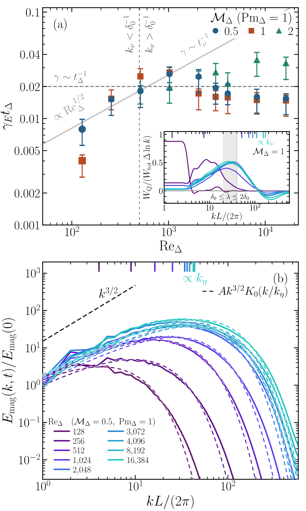
图注：第二阶段快速磁放大中的指数增长与谱诊断。(a) 磁普朗特数为1时的磁能增长率乘剪切时标，灰虚线为0.02，灰实线为经典湍流发电机的标度；误差棒表示拟合区间敏感度。插图为分对数傅里叶壳层的有符号洛伦兹功，阴影标示一至两倍剪切半宽的波长，顶标尺给出黏性尺度。(b) 马赫数0.5时，于各指数段75%处取样的磁能谱及含电阻的Kazantsev模型拟合。
怎么看这张图：主图看高雷诺数速率何时进入平台，插图看主交换波长是否还随黏性尺度移动。右图谱形类似经典模型，不能单靠谱斜率判断增长控制尺度。 直接支持高雷诺数发电机转为剪切尺度控制的主要结论。
来源与置信度：arXiv HTML；source verified；https://arxiv.org/html/2611.05880v1/letter_dynamo_draft.png
强相关工作
Gutiérrez等的并合接触层研究（本文参考文献10）提供局部剪切厚度、速度差及既有测量增长率的比较尺度。本文用可控黏阻盒隔离为何增长率会随物理截止尺度转入平台；这补充了全局或局地加密并合模拟，不替代其中的相对论动力学与时间演化。Radice和Hawke的计算并合综述（文献7）给出从磁能比例换算天体场强的背景。
Kazantsev理论（文献33）和Kriel等的分辨率研究（文献36）提供经典小尺度湍流发电机的磁谱和黏性尺度基线。本文的分歧是最有效的拉伸尺度，在高雷诺数剪切层不是总与黏性尺度重合。Kiuchi等的长寿命遗迹大尺度发电机（文献11）研究的是后续更大尺度场；短时垂直场种子可能输入它，但二者阶段和可观测后果不能互换。
同一事件 / 同类源线索：
- https://arxiv.org/abs/2601.20953
- https://arxiv.org/abs/2402.03224
- https://doi.org/10.1038/s41550-024-02194-y
相似工作：
（未提供）
基础理论 / 方法工作：
相反观点 / 张力线索：
（未提供）
补充推荐：近期/较早未读论文（非今日论文）
1. Imaging exoplanets below the telescope stability limit
- 来源：Nature astronomy and astrophysics
- 链接：https://www.nature.com/articles/s41586-026-11213-z
- 作者：未知
- 类型：补充推荐（近期/较早未读，非今日每日论文）
- 公告 / 来源日期：2026-11-04
- 阅读层级：重点精读
- 评分：novelty 8/10，importance 8/10，relevance 8/10，final 9.00/10
- 推荐理由：已直接读开放期刊正文、Methods、扩展图注与全部补充方法。四数据中真实点源恢复、注入校准与消融实验支持明显方法推进，维持8/8/8精读；未到基本噪声极限、参数退化未标定、远处信号损失及盲搜索口径限制均保留。
中文题目：用可微光学模型扣除恒星光：FLIP在JWST真实数据中突破经验PSF的稳定性限制
做了什么：直接拍摄系外行星时，亮恒星残留的散斑会盖住暗行星。常用KLIP方法把参考观测组合成恒星点扩散函数（PSF），但望远镜指向和波前随时间漂移，参考图不能完全代表科学曝光。作者提出FLIP：先在参考星上校准可微分的光学与探测器模型，再只调整少量参数族去拟合科学图像，并用注入假行星的恢复信噪比决定停止时刻。自动微分使约百万自由参数的优化可计算，核心贡献是把物理模型真正用于真实日冕仪数据，而不只是模拟数据。
作者重分析三个恒星系统、四组JWST/NIRCam数据，在部分角距获得约2–15倍的行星探测灵敏度改善，并首次在4.3微米成像检出已知行星51 Eridani b；正文给原始信噪比6.3，图2经小样本统计换算约5.3σ。TYC 5899中的展示目标是人工注入，并非发现新行星。论文发表于11月4日，本期保留该真实日期。读过开放期刊正文、Methods、扩展图注与9页补充文件；它尚未达到光子噪声极限，也没有测出新的行星金属丰度。
为什么重要：这项结果把灵敏度瓶颈从“必须找到足够相似的参考星图”推进到“能否用经过校准的物理模型解释当前曝光”。三种滤光片、两种日冕仪掩模及不同参考星时间间隔提供了具体验证，尤其参考星相隔四个月的TYC 5899仍有改善。贡献在于新的可验证数据处理能力，不是证明硬件稳定性已经不重要：作者只在JWST的有限样本上展示性能，未来宜居世界观测台的极端对比度仍需独立检验。
理论 / 观测 / 仪器方法价值：可迁移的做法是把仪器响应建模、分阶段拟合与信号注入恢复结合起来。参考星阶段吸收静态模型误差，科学阶段限制可变参数，注入实验则测出真实天体信号被模型吞掉多少。对其他天文逆问题，值得借鉴的是用保真度和检出效率选择模型复杂度，而不是只追求更小残差。方法需要可信的前向响应、独立校准资料及覆盖目标范围的注入样本；不能把JWST光学PSF直接移植成IACT或中微子仪器响应。
为什么应该关注：应特别关注可微模型的退化：不同波前、指向与像素响应能产生相近图像，因此扣除恒星光成功不等于真实仪器参数被唯一测量。FLIP还会扭曲邻近亮星，较大角距的信号损失有时比KLIP更严重。对高能天文分析，更直接的启发是校准与科学数据的角色分开、用注入信号检测过拟合，并把原始信噪比、小样本显著性和盲搜索发现概率区分开；本文尚未验证这些方法在高能数据中的收益。
展开详细解读：文章讲解、背景、理论、重点章节、图表与相关工作
文章详细讲解
科学问题：日冕仪已遮挡大部分恒星光，但有限的光学误差仍会形成散斑。经验算法只能在参考图提供的变化空间中寻找匹配；若科学曝光出现参考库没有的波前或指向变化，增加曝光未必能降低系统残差。作者要检验的是，在实际仪器模型不完美的情况下，是否仍能通过物理前向拟合比经验参考图扣除得更干净，同时保住行星信号。
作者怎么做：以STPSF的名义光学模型和邻近时刻的波前测量为起点，在PyTorch中实现可微傅里叶传播，拟合恒星位置与通量、焦面掩模前后两组光程差以及逐像素响应。先用参考星拟合完整模型，再在科学图上依次调位置/通量和掩模后的光程差；不在科学图上无约束重拟合全部响应。利用假行星恢复信噪比的平台或峰值停止优化，是防止行星被当作模型误差扣掉的关键。
关键结果：图2的真实行星图像和图3经注入恢复校准的灵敏度曲线构成互补证据。HIP 65426 b与51 Eridani b的F410M信噪比分别约提高1.6和2.1倍；51 Eridani b的F430M从旧分析未检出变成信噪比6.3的信号。TYC 5899在0.5角秒处的图示灵敏度改善约15倍，在1角秒处约5倍。这里比较的是特定波段、角距和数据的性能，不是所有天体、所有距离都提高15倍，更不是新发现51 Eridani b本身。
局限和下一步：三个系统不足以刻画整个仪器配置空间，模型尚未到达基本噪声下限，也没有经系统校准得到可信的仪器参数误差。更复杂的探测器效应、近邻亮源和盘结构需要联合建模；地面湍流的快速演化还带来大得多的数据量。下一步可在更多独立观测上检验信号保真度与早停规则、改进亮源场景及探测器模型，再评估是否能推广到MIRI、Roman或未来地球类行星成像。
关键结果是怎么做出来的
第一步是固定比较对象，而不是直接比较一张漂亮图片。作者选择HIP 65426的F444W、51 Eridani的F410M与F430M，以及TYC 5899的F444W，共四组数据。前两系统含已知行星，TYC 5899没有已知伴星行星，因此用人工注入作为受控检验。三种恒星光谱型、圆形和条形两类日冕仪，以及近时/隔月参考星，使测试具有一定多样性；但仍不是大规模独立巡天完备度实验。
第二步是重建合理的经验基线。作者按原发表工作中选择的参数重跑KLIP，合并参考星差分与转场角度差分，并把两次滚转曝光旋转回天球方向后平均；FLIP为简化只处理其中一次滚转，参考星校准也只用一个抖动位置。两者信息使用并不完全相同，不能将结果解读成相同计算资源或相同曝光处理策略下的普适最优性。论文的结论是这种具体实现已经优于所复现的标准流程。
第三步是说明为什么改善不是任意调参得到的图像。扩展图3逐项移除位置、光程差、像素响应或完整参考星预校准：去掉光程差与像素响应会留下不同结构的残差，去掉预校准则明显增加行星过减风险。两个光程差面之间有焦面掩模，单一相位面不能完全替代它们。这个消融证据支持方法构成的必要性，但不同参数仍有退化，不能据此说每一张拟合波前图都是实际仪器误差的唯一解。
第四步把残差下降与信号保留分开。作者在5–7个角距、每角距1–3个位置分别注入假行星，每约300次迭代记录恢复信噪比；过多迭代后信噪比会下降，说明拟合正在吸收天体。最终灵敏度需要同时校正日冕仪透过率和算法信号损失。FLIP四组数据附近的损失区间约为5–20%、20–40%、30–50%和40–60%；这些区间表明高灵敏度并不等于零失真。扩展图5还比较不同亮度和位置的早停行为。
第五步检验“稳定性极限”的含义。图3阴影来自50次模拟，在经验范围内随机改变指向与光程差，刻意不加光子、探测器或平场噪声，再用KLIP分析；阴影是模拟曲线的中央68%范围，不是实测行星参数的置信区间。另一条基本噪声曲线由实际ERR数据生成理想扣除后的噪声实现。FLIP在若干近角距优于前一种稳定性基线，但没有达到后一条理想噪声下限，这两条结论必须一起读。
第六步回到新增天文信息。51 Eridani b在4.3微米的图像进入二氧化碳吸收带附近，是地面大气难以观测的波段；作者将精确测光和大气组成拟合留给未来研究。该文提供新的可用观测点而非已经完成新的金属丰度测量。扩展图6还指出F430M中另一个较弱信号性质未定，不能把它当第二颗行星；TYC 5899的注入图也仅用于校准检出性能。
展开背景、理论、公式、模型和章节导读
背景知识
系外行星直接成像同时面对角分离小与亮度反差大两件事。年轻巨行星尚有自身热辐射，在近红外较容易看到，但即使这类目标也可能比恒星暗十万倍。日冕仪通过光学掩模压制恒星衍射，行星位于偏轴方向，保留一部分光；后期处理是在这个已压制的图像上处理残余星光，不能替代前端光学系统。
点扩散函数描述一个点源通过仪器后在图像中的形状。真实望远镜的相位误差会重新分配恒星光，形成看似点状的散斑；指向偏离掩模中心也会改变泄漏模式。参考星或相邻滚转曝光有助于估计这些结构，但温度变化和光程漂移会使两次曝光不完全匹配。残差因此可能由系统误差而非随机光子噪声主导，盲目延长积分并不保证按平方根规律改善。
KLIP是把参考图构成的主成分基底投影到科学图上的经验方法。其优点是无需完整知道仪器的每个误差，局限是只能组合已有参考样本呈现的形态；同时行星若与这些模式有重叠，也会被一部分扣掉。参考星差分提供不同恒星的PSF，角差分利用滚转时真实天体与仪器结构的相对变化，二者都需评估信号自减或过减。
物理模型的吸引力在于可以主动改变波前与探测器参数，生成参考库之外的PSF；过去的困难是实际光学误差复杂，名义模型不够准，求解也昂贵。自动微分能沿计算图传播导数，使百万参数优化可行，但它没有消除逆问题的不唯一性。FLIP的进展来自可微模型、参考星预校准、有限参数微调及注入恢复共同工作；称其为机器学习方法，不意味着它训练了一个凭空补出行星的通用生成模型。
基础理论 / 方法脉络
光程差是实际传播路径相对理想路径的差，单位为米；除以波长并乘以2π后才成为相位。波前扰动经傅里叶传播变成像面干涉结构，日冕仪焦面掩模又把光场截断，因此掩模前后的误差影响并不等价。作者在两个位置各用1024×1024数组表示光程差，而不是只拟合几个低阶像差；这种灵活性提高PSF拟合能力，也增加参数退化。
宽带图像还要对不同波长的强度求和，不能把一个单色衍射图直接当整幅观测。补充方法中F444W用21个单色波前、F410M与F430M各用9个，像面以两倍采样传播后再对应探测器像素。名义光学模型还包含恒星光谱与滤光片配置，因此不同波段不只是把同一张图乘一个通量系数；这也是比较多个滤光片有验证价值的原因。
探测器模型位于光学传播之后：作者加入标准差0.018角秒的简化高斯电荷扩散，并乘以逐像素响应。光学相位难以独立修复孤立坏像素或像素级响应差异，因此参考星校准阶段也拟合探测器响应，残存坏像素则需掩蔽。模型不包含全部非线性探测器效应，明亮恒星和深曝光可能暴露其边界；当前有效拟合不能当完整探测器标定。
优化用L1残差而不是一套报告后验概率的贝叶斯参数推断。自动微分提供目标函数对各参数的导数，Adam与余弦学习率调度负责搜索；学习率按参数族的量纲和幅度分别选择。参考星校准后，科学数据阶段只调整位置/通量和掩模后光程差，并减慢最后阶段优化。限制拟合自由度的目的，是使星光模型追踪仪器变化而不过度吞掉天体，但是否成功仍必须由注入恢复验证。
公式与推导
原文Methods与补充方法给出了傅里叶传播、L1优化、注入恢复及小样本统计的实现，但没有列出连续编号推导。以下九式是据这些实现整理的标准教学表达，变量和算子用于解释证据链；不是新增的论文测量或作者公布的完整源代码。数值设置和损失函数来自原文，简化光学算子与统计式的适用条件分别注明。
（1）由光程差到相位。对波长 \(\lambda\)，令入瞳振幅为 \(A(\boldsymbol u)\)，光程差为 \(W(\boldsymbol u)\)，则单色复场可写为
这里位置 \(\boldsymbol u\) 在瞳面，\(W\) 与 \(\lambda\) 都用米，指数无量纲。恒星的微小角偏移可表现为瞳面的线性相位，解释了为何位置误差与部分相位自由度退化；这个关系是标准波动光学，不代表作者测得了唯一波前。
（2）由光场到日冕仪像面。将实际仪器中的掩模和传播合并成依赖两个光程差面的算子 \({\cal C}_{W_1,W_2}\)，则宽带理想PSF为
\(w_\ell\) 表示恒星光谱与通带的归一化权重；不同波长之间按非相干强度相加。算子采用论文的Fraunhofer近似和傅里叶光学，焦面掩模使两相位面不能简单相加成一张相位图。离散波长数与过采样是数值近似，而不是新的独立观测数。
（3）加入探测器并预测像素数据。把理想PSF在第 \(p\) 个像素上积分后，再用响应 \(q_p\) 和恒星总通量 \(F_\star\) 标定，可概念性写成
\(G_s\) 是归一化电荷扩散核，论文取 \(s=0.018\) 角秒；\(q_p\) 为无量纲相对响应。数据和 \(m_p\) 必须使用同一通量单位。此式只表示作者采用的简化有效响应，不含所有电荷迁移和读出非线性，因此后续低残差仍可能来自参数间代偿。
（4）将物理模型接到实际拟合。对有效、未掩蔽像素集合 \(\Omega\)，作者使用的L1目标可写为
参考星阶段优化整个参数集合，科学阶段仅开放相应子集。这里没有把每像素残差除以误差后构成高斯卡方，也没有明确后验先验；所以不能用这个最小值自动给参数置信区间。坏像素掩蔽决定哪些数据进入目标，参考星预校准决定优化的起点。
（5）自动微分解决的是导数计算。链式法则给出
残差为零时取合适次梯度。这个导数经过光学、像素积分与探测器模型反传，避免逐参数有限差分所需的大量重复前向计算；实际更新使用Adam而非此式本身。得到梯度快，不意味着目标函数凸或所有参数可辨识，参考星阶段和分组优化仍不可省略。
（6）为什么残差变小可能伤害行星。教学上将数据分成恒星、行星与噪声，扣除估计星光后得到
若 \(\widehat s_p\) 部分拟合了 \(a_p\)，最后一项会含负的行星成分，残差虽更平滑，天体却被削弱。本文星光模型没有同时拟合所有偏轴天体；这正是近邻亮星畸变和迭代过久后假行星信噪比下降的物理来源。
（7）注入恢复量化该损失。把同一个已知通量假行星在扣除流程前加入科学数据，定义局部算法透过率
\(\rho,\varphi\) 是角分离和位置角；恢复量须与无注入基线比较，不能把原有背景当假行星通量。论文分别运行各注入并跟踪迭代，透过率会依位置、亮度和早停规则变化。因此有限注入点只校准相应范围，不能代表对所有源形态的无偏恢复。
（8）将噪声转为可比较的对比度。若环带噪声尺度为 \(\sigma_\rho\)，日冕仪透过率为 \(T_{\rm coro}\)，目标阈值系数为 \(k_\rho\)，则概念性的校准曲线为
分子与 \(F_\star\) 要采用相容的测光口径；\(k_\rho\) 包含小样本统计校正，不能一律当成固定高斯5。因此FLIP即使噪声残差更低，若大角距处透过率也更低，校正后可能不如KLIP。图3曲线的高低必须在这种校准之后比较。
（9）信噪比为何不等于高斯显著性。对一个测试分辨元和 \(N\) 个近似独立背景分辨元，常见的小样本教学形式为
其尾概率取Student分布而非直接把 \(t\) 当高斯σ。本文补充方法按环带内约3×3像素的分辨元数确定小样本数，并以平滑后高斯峰值与环带标准差定义原始信噪比；上式解释原理，不宣称逐行复现作者代码。相邻分辨元相关性、超参数选择和全视场试探仍需额外评估。由此可理解F430M原始SNR=6.3与图注约5.3σ并不矛盾，却不能推成一次任意盲搜索的全局发现显著性。
模型拟合 / 应用方法
实际输入先经JWST pipeline 1.18.1和spaceKLIP 2.2.1处理，包含坡度拟合、通量单位转换与坏像素清理。作者又目视掩蔽残存坏点，因为物理模型不能像相同像素图相减那样自动消掉共同缺陷。优化在80×80像素视场的时间平均观测上进行；补充方法指出，这对JWST慢变像差比逐积分拟合更高效，但深曝光或快速变化时未必足够。
参考星阶段分三步：先求恒星位置与通量，再求两个光程差面，最后联合光程差和像素响应。科学阶段分两步：先调整目标位置/通量，再调掩模后的光程差。虽然掩模前波前也可能漂移，作者经验上发现后掩模优化更稳定，故这是一种有效拟合选择，不能理解成证明前掩模波前没有变化。作者使用不同参数族的学习率，按数量级手动选取稳定且能收敛的范围。
拟合诊断必须同时观察恒星残差和假行星。每个注入单独运行，亮度选在基本噪声5σ阈值的约4–20倍，跟踪恢复信噪比并在平台附近早停；本文最终实验为简化用一个假行星选择停止点，再用其他注入检验。扩展图4检查学习率变化，扩展图5检查早停与信号损失。对未知目标巡天，若利用已知行星最佳表现调参，其灵敏度结论还需独立的注入集合和盲验证来约束选择偏差；这是核读建议，并非作者已完成的检验。
统计输出是校正后的对比度、已知源信噪比和有限注入性能，不是百万仪器参数的联合后验。基本噪声曲线使用ERR中的读噪声、泊松与平场误差模拟一个理想残差场，故它是乐观参考；稳定性曲线则只随机化指向与光程差。指向误差采用标准差10毫角秒的正态分布，光程漂移均方根幅度按均值4、标准差1纳米抽取，做50次实现。不要把这50次仪器扰动等同于大样本天体检出率。
原文Methods的TYC 5899比较段在0.5角秒列出的FLIP数值与正文/图3改善方向存在不一致，本解读据图3及其明确的注入恢复说明描述收益，不沿用该段孤立数值。补充文件给15–35分钟的运行范围，正文又列两个阶段各约10–15与10–30分钟；这些是不同表述口径，不能给出精确统一吞吐率。更实质的边界是大角距可能不优于KLIP、亮邻源会失真、参数退化未校准；未来应先解决这些问题，再谈更严格的稳定性预算替代。
重点章节 / 结果段落怎么读
-
从Abstract、Main到图1：先确认问题是参考PSF与当前仪器状态不匹配，而非望远镜没有衍射极限。画出参考观测、物理模型、科学曝光三者关系，弄清FLIP仍使用参考星，只是不把参考图线性组合作为最终模型。
-
连读FLIP method overview与Methods的Optimization design：记录两阶段分别开放哪些参数，再看扩展图2、3。特别检查为何第二阶段不同时自由调两个光程差面和像素响应，以及去掉预校准为何会吞掉行星；这是理解性能来源和退化的核心。
-
对照图2与PSF subtraction performance metrics、补充文件第4页：区分已知行星、TYC人工注入、原始SNR与Student统计换算后的置信度。F430M的6.3与5.3σ分别属于不同口径，额外弱斑点仍是性质未定的信号。
-
对照图3与Estimation of the stability-limited sensitivity：先读透过率校正，再读50次仅含指向/光程漂移的模拟。阴影不是观测误差条，基本噪声曲线又不是纯光子噪声实测；HIP 65426在0.6角秒内的缺口也不能插值补成已验证性能。
-
最后读Future improvements和补充讨论：列出未解决的探测器非线性、参数退化、邻源失真、地面毫秒级遥测成本，并与未来Roman/HWO推广主张逐项对应。这样可把本文已经展示的JWST能力与尚待验证的未来任务收益分开。
关键图表与解读
图2
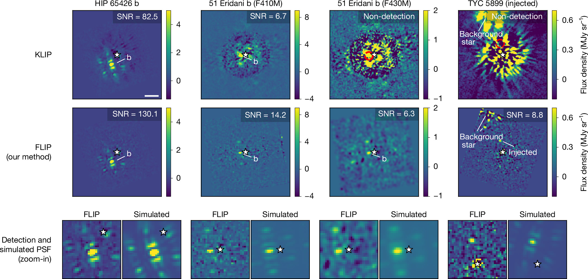
图注：图2｜FLIP与标准KLIP的恒星点扩散函数扣除比较。上排：本文用各目标原发表工作相同的算法超参数重新进行KLIP处理，所有重处理结果均与原发表结果相当（原文参考文献26、31、32）。中排：FLIP处理结果，展示所优化的完整80×80像素视场。下排：把FLIP检出的伴星图像放在理想模拟点扩散函数旁，突出恢复的形态并区分真实点源与点扩散函数旁瓣。每个面板右上角标出检出信噪比。按参考文献50考虑小样本统计后，上、中两排从左到右的检出置信度依次为23.7σ、5.7σ、未检出、未检出，以及26.3σ、8.8σ、5.3σ、7.7σ。星形符号标出恒星位置；全部面板北向上、东向左。51 Eridani的F430M图像用标准差1像素的高斯核平滑像素间噪声，仅该面板中像素间噪声与伴星亮度相当。比例尺为1角秒。四列分别为HIP 65426 b、51 Eridani b的F410M与F430M、TYC 5899人工注入目标；色标为通量密度，单位MJy/sr。
怎么看这张图：先沿同一列比较上下两种扣除，再看最下排的点源形态，避免把散斑旁瓣当作行星。F430M从未检出到SNR=6.3是本图最直接的新观测证据，但小样本换算后约为5.3σ；它不是新发现51 Eridani b。TYC列明确标为人工注入，不代表新增天体。上、中排色标及平滑口径需要一起读，单看颜色亮度不能比较显著性。 分别展示真实点源恢复证据与校准后的灵敏度及适用边界。
来源与置信度：Nature open-access original HTML image；official full-resolution figure and caption verified；https://media.springernature.com/full/springer-static/image/art%3A10.1038%2Fs41586-026-11213-z/MediaObjects/41586_2026_11213_Fig2_HTML.png
图3
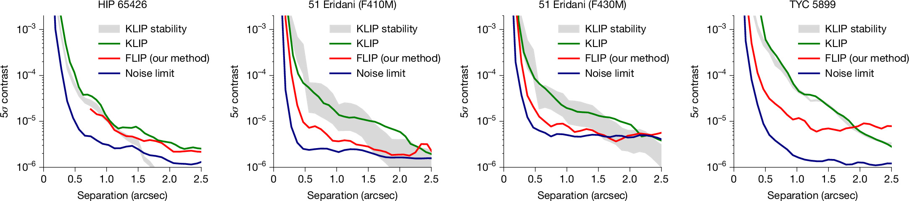
图注：图3｜各组实测数据中KLIP与FLIP的探测灵敏度曲线。曲线均经注入恢复检验校准；同时展示这些实测数据的基本噪声灵敏度下限，以及由模拟数据估算的KLIP稳定性受限灵敏度范围。本文方法显著改善系外行星探测灵敏度，在一些情形下达到4–15倍。稳定性基线来自50次参考星与科学目标观测的随机实现，包含现实的光程差漂移和恒星—日冕仪对准误差，对这些模拟数据运行同样的KLIP；灰色阴影为这50次随机抽样的中央68%置信范围。HIP 65426中，明亮行星的点扩散函数旁瓣造成污染，因此作者没有在0.6角秒内测量FLIP灵敏度；KLIP则先用KLIP-FM扣除行星后计算，故该范围仍有采样（参考文献51）。四面板依次为HIP 65426、51 Eridani的F410M与F430M、TYC 5899；横轴为角分离（角秒），纵轴为5σ对比度。绿、红、蓝线分别为KLIP、FLIP与基本噪声下限。
怎么看这张图：先固定同一个角距比较红绿线，再看红线是否接近蓝线：曲线越低，可检出的行星/恒星通量比越小。TYC近角距改善突出，但远处红线可能高于绿线，说明信号透过率校正后并非处处更优。灰带来自特定仪器扰动模拟，不是红线误差条；HIP的内侧缺口是未测范围，不能外推补齐。曲线尚未到达蓝线，所以突破经验稳定性限制不等于达到光子噪声极限。 分别展示真实点源恢复证据与校准后的灵敏度及适用边界。
来源与置信度：Nature open-access original HTML image；official full-resolution figure and caption verified；https://media.springernature.com/full/springer-static/image/art%3A10.1038%2Fs41586-026-11213-z/MediaObjects/41586_2026_11213_Fig3_HTML.png
强相关工作
经验基线来自Soummer、Pueyo与Larkin 2012年的KLIP主成分投影方法（本文参考文献14），论文按各目标原发表分析的最佳配置重现了这一基线。FLIP并非首次提出用物理模型扣星光；参考文献25的Feng等2025年工作已经在简化单色模拟中使用可微渲染。根据本文对前作的说明，新增之处是多波段真实日冕仪数据、两个灵活光程差面、参考星预校准和信号安全的优化安排。这里的比较以本文正文及引用条目为依据，未声称重新复现或阅读全文验证所有前作。
统计基础与天体背景需分开读。参考文献50的Mawet等2014年工作解释小角距只有少数独立分辨元时，普通高斯阈值为何不可靠；它为图2的SNR到置信度换算提供依据，不代表自动完成全视场试探修正。51 Eridani b的既有NIRCam工作是参考文献26的Balmer等2025年结果，本文新增的是F430M此前未检出的图像。关于金属丰度与形成史，作者明确留给未来测光和大气建模；不能把新波段检出等同于已证实新的化学成分约束。
同一事件 / 同类源线索：
- https://www.nature.com/articles/s41586-026-11213-z
- https://static-content.springer.com/esm/art%3A10.1038%2Fs41586-026-11213-z/MediaObjects/41586_2026_11213_MOESM1_ESM.pdf
相似工作：
基础理论 / 方法工作：
相反观点 / 张力线索：
（未提供）
相关简报
1. A Laplace-Transform Green's Function for Two-Zone Diffusion with Energy Losses: Application to the Geminga Pulsar Halo
- 来源：arXiv / astro-ph.HE
- 链接：https://arxiv.org/abs/2611.05808
- 作者：Furong Li, Wei Liu, Yali Shao, Yiqing Guo
- 公告 / 来源日期：2026-11-05
- 阅读层级：相关简报
- 评分：novelty 7/10，importance 7/10，relevance 10/10，final 9.05/10
- 推荐理由：全文证实密度/通量匹配、同扩散指数与均匀能损、同参独立积分对照；HAWC需乘3.5，核解进展不冒充绝对亮度/慢区联合拟合。
中文题目：Geminga双区扩散的新解析解：匹配边界容易，确定真实参数仍难
问题、方法与结论：Geminga周围的甚高能伽马晕提示粒子在近源区传播慢，但慢区之外不必同样慢。作者将电子与正电子连续能损折入扩散时标，对球形内慢外快模型作拉普拉斯变换，按点源和界面条件拼接格林函数。新级数解在内外扩散系数相同的极限回到高斯核，并在所测参数下与已有独立积分解一致。把它用于Geminga后，给定慢区半径和注入时，外部粒子尾更长，到达地球的TeV正电子谱比全空间慢扩散模型更宽。
意义与贡献：密度连续并不意味着密度斜率连续：边界没有储存粒子的薄层时，扩散系数乘密度梯度才须在两边相等。正确处理这一点才能同时描述晕内积累和向外泄漏。文章给出的新东西是可核对的传播解，而非首次发现双区扩散或确定Geminga解释了正电子超额。
可借鉴之处：复用时可先用单位脉冲检查粒子数守恒、同系数高斯极限和边界两侧通量，再卷积脉冲星自转损失驱动的持续注入。作者以固定内区扩散率扫描外区扩散率和边界半径，并将正负电子的逆康普顿发光沿视线积分，从同一传播核分别输出地球粒子谱与伽马晕剖面。这比把两类数据各拟一套参数更能看清退化。
局限与关注点：模型规定两区扩散系数能量指数相同、辐射与磁场均匀且界面突变。HAWC的5–50 TeV剖面只复现了主要径向下降，绝对亮度仍需整体乘3.5；这一模板归一约定不是联合拟合得到的置信区间。不同注入谱和释放历史同样能改变正电子预测。实际比较LHAASO或IACT数据时应前折叠各自能段、点扩散函数及大尺度背景，再检验半径是否可辨识。
图4
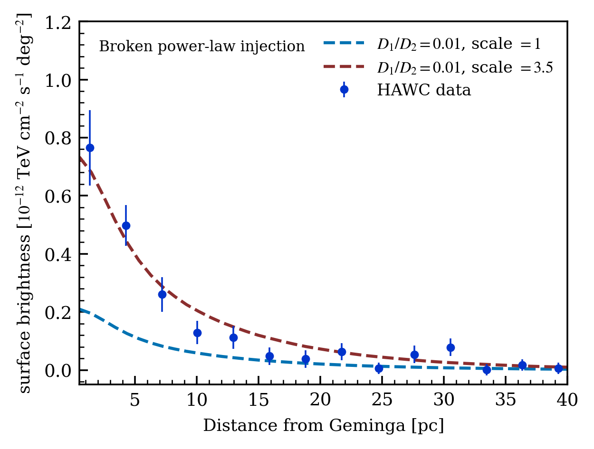
图注：Geminga周围5–50 TeV伽马射线积分表面亮度随距源角度的变化。(a) 单幂律注入，(b) 折断幂律注入；内外扩散系数比均为0.01。蓝虚线用表3中的注入效率，红虚线为对应曲线整体乘3.5，点为HAWC数据。
怎么看这张图：分别对照曲线形状和绝对亮度。作者沿用空间模板归一约定进行重标定，不能把贴合红线读成无需调归一即可预测实测，也没有在图中联合反演慢区参数。 核对文章最容易被简化成已经拟合HAWC的主张。
来源与置信度：arXiv HTML；source verified；https://arxiv.org/html/2611.05808v1/Single_gamma.png；https://arxiv.org/html/2611.05808v1/Broken_gamma.png
2. A search for sterile neutrinos at ultrahigh energies at the Pierre Auger Observatory
- 来源：arXiv / astro-ph.HE
- 链接：https://arxiv.org/abs/2611.06284
- 作者：Pierre Auger Collaboration, A. Abdul Halim, P. Abreu, M. Aglietta, M. Ahmed, I. Allekotte, K. Almeida Cheminant, R. Aloisio
- 公告 / 来源日期：2026-11-05
- 阅读层级：相关简报
- 评分：novelty 7/10，importance 8/10，relevance 9/10，final 9.05/10
- 推荐理由：Auger既有地掠0与上行1背景相容，逐步传播和τ效率前折叠给90%谱归一界；区分积分/微分，宇宙成因低于现有灵敏度，DM限特定模型。
中文题目：Auger如何限制超高能惰性中微子：穿地和转换之间的竞争
问题、方法与结论：惰性中微子若少量混合陶味，就能弱相互作用：更容易穿过地球，却更不容易在出口附近产生可见的陶轻子。Auger合作组用蒙特卡洛模拟地球密度、带电流与中性流反应、陶轻子能损和衰变，并折叠已有阵列效率。既有地掠事件搜索没有候选，上行荧光通道的一个候选与背景相容。论文据此给出0.3–200 EeV内按能量负二次方谱归一的90%置信通量界，主要由地掠通道决定；没有惰性态检出。
意义与贡献：这个结果拓宽了空气簇射阵列能检验的粒子范围。截面变小对长地球弦既能减轻吸收，也会减少产生可见信号的机会；因此上行曝光在中等混合时最有利。地掠的穿地路径本来已适合活性中微子，混合继续变小时转化数大致与混合角正弦的平方同降，两通道并不会一起变灵敏。
可借鉴之处：可复用的路径是将中微子能量和方向映射到出地表陶轻子的能量，再将大气中的衰变高度与仪器触发、筛选效率相乘，得到按能量的曝光。测不到事件时，应先报告相应的通量上限，再以具体谱型和传播存活率换算粒子模型；区分按一个能段积分的谱归一上限与逐能段的微分限制。
局限与关注点：结论限主要与陶味混合、质量在MeV至100 MeV的模型。地球中陶轻子能损是主要曝光系统误差，约向上34%、向下28%。常规宇宙源经过振荡和衰变得到的基准惰性流量远低于当前能力；超重暗物质寿命曲线还假定银河晕和具体衰变方式，不能理解为直接排除了所有该质量的惰性粒子。
图2
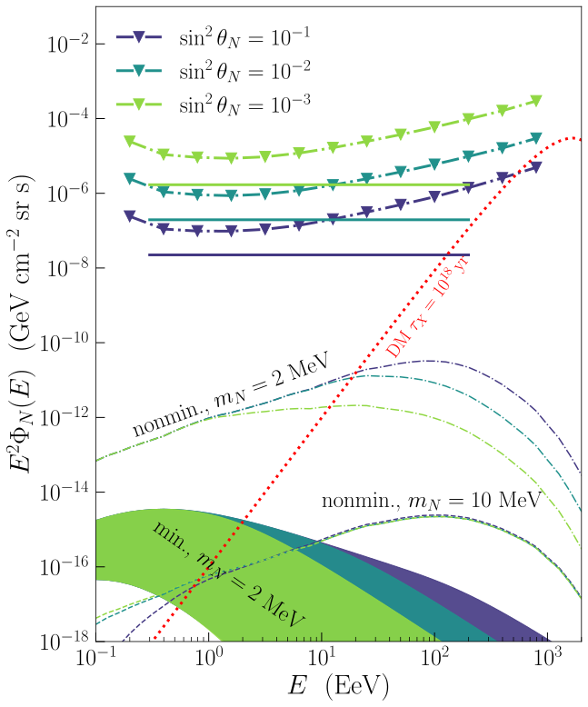
图注：MeV至100 MeV质量的超高能惰性中微子弥散通量90%置信上限。横轴是粒子能量，纵轴是能量平方乘微分通量；三组颜色为混合角正弦平方0.1、0.01、0.001。三角点和点划线为微分上限，实线为给定谱的积分上限。色带和其他虚线是宇宙成因振荡基准；红点线是质量为10的13次方GeV、寿命10的18次方年的超重暗物质衰变示例。
怎么看这张图：上限与理论预测按相同混合角比较，区分每个能段的微分限制和假设能量负二次方谱后的归一限制。普通宇宙成因预测远低于当前灵敏度。 兼顾真实非检出限制和理论通量的可探测差距。
来源与置信度：arXiv HTML；source verified；https://arxiv.org/html/2611.06284v1/limit.svg
3. Unsupervised Neural Operators for Rotating Relativistic Stars: High-Fidelity Equation of State Inference and Pulsar Spin Evolution at Scale
- 来源：arXiv / astro-ph.HE
- 链接：https://arxiv.org/abs/2611.05790
- 作者：Anarya Ray
- 公告 / 来源日期：2026-11-05
- 阅读层级：相关简报
- 评分：novelty 8/10，importance 8/10，relevance 7/10，final 8.65/10
- 推荐理由：全文与附录：物理格林映射残差训练、无解标签；轴对称求值35 ms对RNS 45 s，质量/半径中位误差0.14%/0.03%；不含训练成本，当前真实数据偏移小于5%模拟注入场景。
中文题目：让神经算子求旋转中子星结构：千倍加速成立在哪一步
问题、方法与结论：中子星高速旋转时会变扁，静态球对称模型不再给正确的质量与半径。作者让神经算子从状态方程、中心焓和极赤半径比直接预测度规势，再将输出代回爱因斯坦方程的格林积分。训练目标是预测和重新积分一致，不需要现成恒星解作标签。所测轴对称算例中，训练后单次求值约35毫秒，传统RNS参考计算约45秒；质量和半径相对误差的中位数分别为0.14%与0.03%。
意义与贡献：中子星结构求解并非只算一次。状态方程反演要反复试不同压力—密度曲线，双星吸积自转演化也要在每步更新质量、半径和惯量。将昂贵的平衡迭代移到一次训练，有机会在这些重复任务中保留旋转效应。作者以模拟注入展示了忽略旋转可偏向更硬的状态方程；真实样本的变化比注入示例温和。
可借鉴之处：关键做法是把无穷远衰减、赤道对称等结构写进输出形式，再用三个势的格林映射固定点残差约束网络；没有必要先建一大批标注解。核验时仍应留独立数值解对照，分别报告质量、半径等科学量的误差及单次求值时间。文章同时给出静态求解器，其加速仅约7倍，说明收益取决于参考任务本身的成本。
局限与关注点：约千倍是该旋转基准的训练后求值之比，不包含一次训练成本，也不是整个贝叶斯或星族流水线都快千倍。训练覆盖给定谱参数化的均匀旋转、冷平衡状态方程，超出分布的相变、差分转动与磁场要重新验证。注入假定质量和半径各有5%独立误差，不能把其偏差幅度直接套给现有观测；长期吸积示例也采用简化质量转移处方。
图2
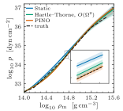
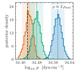
图注：旋转中子星状态方程的模拟注入与恢复。左为压力随质量密度变化的后验，右为两倍核饱和密度处的压力分布；对照完整旋转结构、忽略旋转和二阶旋转修正。注入状态方程来自独立RNS参考解，静态及二阶方法在若干密度段将真值排除在90%范围之外。
怎么看这张图：比较各方法的后验带与注入真值，在相同模拟误差假设下看结构近似是否改变压力推断。真实观测目前的误差更大，差异见附图5而非直接套用此图。 把单次求解精度连接到实际状态方程推断偏差。
来源与置信度：arXiv HTML；source verified；https://arxiv.org/html/2611.05790v1/fig_prho_sim.svg；https://arxiv.org/html/2611.05790v1/fig_phist_sim.svg
4. The Start Time of Ringdown
- 来源：arXiv / astro-ph.HE
- 链接：https://arxiv.org/abs/2611.05472
- 作者：Adrien Kuntz
- 公告 / 来源日期：2026-11-05
- 阅读层级：相关简报
- 评分：novelty 8/10，importance 8/10，relevance 7/10，final 8.65/10
- 推荐理由：实际时域解与动态/恒振幅多泛音级数比较，ISCO主模峰后9.43M为恒振幅收敛点，解析延拓非视界内传信号；非自旋极端质量比。
中文题目：黑洞振铃从何时开始：恒定振幅模态和真正的收敛起点
问题、方法与结论：作者问的是何时可把引力波振铃表示为一组固定激发振幅的衰减振荡。对一个沿测地线落入无自旋黑洞的轻粒子，他们在无穷远计算时域波形，再将传播格林函数中的准正常模留数与粒子源卷积。源仍在激发时，模态振幅随时间变化；跨过传播势垒对应的反弹半径后，这类展开已能逼近波形，仍需加晚时尾项。固定振幅展开则更晚才收敛。粒子从最内稳定圆轨道坠入时，主四极模峰后约9.4倍黑洞引力时标才跨过这个门槛。
意义与贡献：较早波形可以被有限个阻尼正弦拟合得很好，但拟合残差小并不保证所取振幅已是黑洞的物理激发系数。本文给出一个可对照精确时域解的例子，表明反弹到收敛起点之间，增加固定振幅的泛音反而可能使近似更差；同一段信号用动态激发形式则可收敛。这区分了描述波形与解释模态的两类问题。
可借鉴之处：可借鉴的验证是用同一源轨迹生成独立时域解，逐次增加泛音和镜像模，再比较不同起点处的误差；这样能识别真实截断误差、散射尾和数值误差各自的作用。作者计算至第150阶泛音，还对偶宇称格林函数的代数特殊频率另行处理；略去这个贡献会把部分确定的传播残差误称为新信号。
局限与关注点：9.4倍引力时标只对应无自旋、极端质量比、忽略辐射反作用且从指定轨道坠落的算例。收敛边界对应外部轨迹解析延拓的奇点，不能理解为奇点把信息传到视界外。真实并合有自旋、非线性动力学与探测器噪声，下一步需在数值相对论波形中验证同样的起点判据，不能直接给所有观测统一加9.4倍时标。
图1
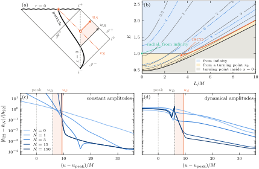
图注：Schwarzschild黑洞测试粒子坠落的振铃起点。(a) 时空图：粒子经过反弹半径后落向中心奇点，橙色标示由轨迹解析延拓确定的起点对应关系。(b) 不同轨道能量和角动量下，振铃起点相对反弹及光环时刻的间隔，以黑洞质量时标为单位；星号是最内稳定圆轨道坠落。(c)、(d) 分别是固定和动态振幅下，截断到不同泛音阶数及镜像模的相对误差。竖线依次标出主模峰值、反弹时刻和固定振幅收敛起点；阴影是两个起点之间。
怎么看这张图：对照下方两幅误差图，动态振幅在反弹后即改善，固定振幅须等到橙线之后。起点由外部轨迹的解析性质决定，图中几何构造不表示奇点向外传信号。 同时呈现几何定义和不同泛音数的数值收敛测试。
来源与置信度：arXiv HTML；source verified；https://arxiv.org/html/2611.05472v1/fig1.svg
5. Insights on the mass composition of ultrahigh-energy cosmic rays from small-scale anisotropy with large-scale structure simulations
- 来源：arXiv / astro-ph.HE
- 链接：https://arxiv.org/abs/2611.05783
- 作者：Ryo Higuchi, Eiji Kido, Shigehiro Nagataki
- 公告 / 来源日期：2026-11-05
- 阅读层级：相关简报
- 评分：novelty 7/10，importance 6/10，relevance 9/10，final 8.35/10
- 推荐理由：核对35个>100 EeV事件、3°近邻统计和模拟网格；真实统计相容各向同性，纯p/Fe/U、δ=b近似、模拟本地宇宙及铀重标定使结果不能作为独立组成约束。保留模拟框架的有限方法价值。
中文题目：百艾电子伏宇宙线没有明显聚簇：源密度、核组成和磁偏转怎样纠缠
问题、方法与结论：作者从Auger一期公开样本取35个能量超过100 EeV的宇宙线，用3°内近邻的统计量寻找小尺度聚簇，观测值落在各向同性模拟的分布内。为解释这一结果，他们把模拟星系目录的源分布、粒子传播损失和随机磁偏转卷积成到达方向图，再为纯质子、铁和铀分别造等大小的观测样本。在这组模型中，纯质子多数网格难以产生如此弱的聚簇；较强的湍磁场能使铁和铀都相容，铀的更远源还可减弱附近星系结构的印记。
意义与贡献：最高能宇宙线的方向不是简单的源位置。电荷影响磁偏转，核质量和背景光子的反应阈值又影响能从多远抵达，两个效应都可削弱成团。这篇文章有价值的是把三者放到同一模拟观测中比较，直观展示即使观察到近各向同性，也不能独立量出组成或星际磁场。
可借鉴之处：可复用的是先按粒子种类算能量损失权重，再将源距离权重、方向平滑和阵列曝光加入模拟天空，用与真实样本相同的数量及角尺度重算统计量。作者另加一种银河磁场透镜，允许区的源密度下界随之移动约一个数量级。这个对照揭示应怎样传播磁场系统误差，避免把固定磁场假设当作数据本身。
局限与关注点：本文以等光度假设和单一模拟环境代替真实近邻源表，甚至在示例曝光中把银纬近似成赤纬；铀的传播又由光致裂解损失对铁的距离分布作重标定。允许区是把模拟近邻统计中位数与各向同性分位数比较，并非对实测组成做完整似然反演。35个事件下，不能据此宣称发现铀或模型无关排除质子，应同簇射最大深度、能量和大尺度分布联合检验。
图11
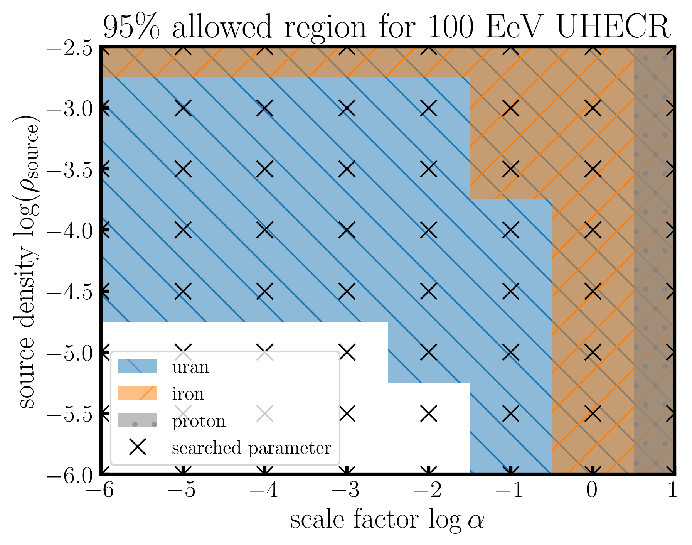
图注：不同宇宙线纯核组成下，源数密度与湍磁偏转尺度参数的模拟相容区域。黑色十字为实际搜索网格；灰、橙、蓝分别表示纯质子、纯铁、纯铀的模型区域。磁偏转参数将磁场强度与相干长度的平方根合在一起。判据为模拟近邻统计中位数落入各向同性样本的一侧95%范围。
怎么看这张图：关注铁和铀的重叠以及质子在极强湍场端的相容例外。颜色是模型网格通过判据的范围，不是由实际事件拟合出的核素比例后验。 直接展示源密度、核组成和湍磁场的相互退化。
来源与置信度：arXiv HTML；source verified；https://arxiv.org/html/2611.05783v1/fig_paper/fill_output_summary_20260326_MFon_Inclined.png
6. Gravitational-Wave Constraints on $R^2$ Gravity
- 来源：arXiv / astro-ph.HE
- 链接：https://arxiv.org/abs/2611.06902
- 作者：Pawan Kumar Gupta, Laura Sagunski
- 公告 / 来源日期：2026-11-05
- 阅读层级：相关简报
- 评分：novelty 7/10，importance 7/10，relevance 7/10，final 8.00/10
- 推荐理由：BNS联合a上限6.24e6平方米（90%），相位模型0PN、固定点粒子荷质比和GR潮汐。五数量级比较仅对既有天体界，实验室更严；不采用有单位换算歧义的单事件值。
中文题目：用双中子星旋近约束平方曲率引力中的短程标量作用
问题、方法与结论：在广义相对论的作用量加入平方曲率项后，额外标量可在中子星之间提供有限程作用。作者把单个平方曲率耦合映射到有质量标量的有效场论，计算保守力和额外辐射怎样改变旋近相位，在现有潮汐波形上加入这一修正，再用GW170817与GW190425分别估计并合并。两次事件都与广义相对论相容；在所用先验与波形假设下，合并的90%可信上限约为620万平方米，对应标量作用程不超过约6.1千米。
意义与贡献：这项限制来自强自引力双星真实的相位积累，约比文中对照的重力探测器B号天体物理限制严格五个数量级。它不能解释为打破所有实验限制：实验室反平方律测量在这套未屏蔽理论下更严。价值在于以不同环境和可观测量，检验额外引力自由度是否会改变中子星轨道。
可借鉴之处：作者先区分没有严格频率开启点的尤卡瓦保守作用和必须达到标量质量阈值的辐射。所用点粒子近似给两颗中子星相同标量荷质比，故偶极项消失；中子星与黑洞的组合虽可有偶极项，却因黑洞无标量荷而缺少主要保守项。这样的选择先由各通道是否真能作用于观测频段决定，再用两事件后验合并，适合其他有限程新力的检验设计。
局限与关注点：标量荷质比是在点粒子近似下得到的，真实中子星的致密度和物态方程会改变有效荷；分析也沿用广义相对论的潮汐参数化，未自洽计算修改引力中的潮汐结构。可信上限依模型、低自旋先验和耦合先验；现阶段不能把相位残余视为新粒子，更不应将限制直接搬到有环境屏蔽的其他引力模型。
图2
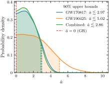
图注：平方曲率耦合的无量纲参数边缘后验。曲线分别来自GW170817、GW190425与两事件合并；红色虚线是零耦合的广义相对论极限。90%可信上限依次为2.97、5.02和2.86，均与零耦合相容。
怎么看这张图：联合结果以一个共同耦合参数约束作用程。曲线峰值不能视作非零耦合发现；对比不同实验还须看耦合模型和环境。 直接展示两次实测双中子星事件对同一理论参数的限制。
来源与置信度：arXiv HTML；source verified；https://arxiv.org/html/2611.06902v1/a_hat_kde_GW170817_GW190425_comb.svg
说明
评分由 LLM 给出初评，再由本地阈值策略过滤；IACT、TeV 伽马射线和高能中微子天文学按重点方向处理。